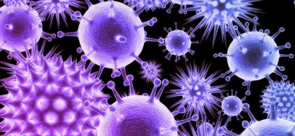
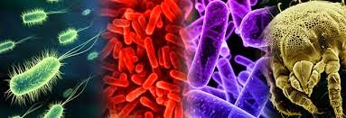

ES AQUELLA QUE VIENE PRODUCIDA POR ORGANISMO QUE PRESENTAN UN DETERMINADO CICLO DE VIDA, Y NECESITA DE ENTORNO PARA DESARROLLARSE SIENDO
CAPAZ DE DEGRADAR LA CALIDAD DEL AGUA, SUELO, AIRE Y ALIMENTOS, SIENDO DE ESTA FORMA UN PELIGRO PARA LOS SERES VIVOS,
YA QUE PUEDEN CAUSAR ENFERMEDADES PARASITARIAS E INFECCIOSAS.

PRINCIPALES CONTAMINANTES:
LOS PRINCIPALES CONTAMINANTES BIOLÓGICOS INCLUYEN LOS MOHOS, EL EXOESQUELETO Y HECES DE ÁCAROS DEL POLVO, CUCARACHAS Y OTROS INSECTOS,
LA CASPA DE LA PIEL Y EL PELO DE ANIMALES COMO LAS MASCOTAS, TODOS LOS CUALES PUEDEN ACTUAR COMO ALERGENOS, BACTERIAS COMO LAS LEGIONELLAS,
VIRUS Y OTROS AGENTES CAPACES DE PRODUCIR.
CÓMO SE PUEDE PREVENIR LA CONTAMINACIÓN BIOLÓGICA:
1.LIMPIAR Y DESINFECTAR FRECUENTEMENTE LOS OBJETOS QUE UTILIZAMOS Y LOS ESPACIOS EN LOS QUE VIVIMOS.
2.MANIPULAR Y GESTIONAR ADECUADAMENTE LOS RESIDUOS QUE GENERAMOS EN CASA, EN LA OFICINA O EN NUESTRO
TRABAJO, EVITANDO EL CONTACTO DIRECTO A ELLOS.

QUE CAUSAN LOS CONTAMINANTES BIOLÓGICOS:
LOS PRINCIPALES DAÑOS DERIVADOS DE LA EXPOSICIÓN A AGENTES BIOLÓGICOS SON: INFECCIONES, ALERGIAS Y EFECTOS TÓXICOS O INTOXICACIONES.
CUÁLES SON LAS CARACTERÍSTICAS DE LA CONTAMINACIÓN BIOLÓGICA:
LA CONTAMINACIÓN BIOLÓGICA ES CAUSADA POR ORGANISMOS CON UN DETERMINADO CICLO DE VIDA, DURANTE EL CUAL, PARA REALIZAR DICHO CICLO,
HABITAN ENTORNOS EN LOS QUE SON CAPACES DE DEGRADAR LA CALIDAD DEL AIRE, EL AGUA, EL SUELO Y LOS ALIMENTOS, SIENDO UN GRAN PELIGRO
PARA LOS SERES VIVOS, AL SER CAPACES DE OCASIONAR.
CUÁLES SON LOS FACTORES BIOLÓGICOS:
LOS FACTORES BIOLÓGICOS O BIÓTICOS SON LOS QUE SE INCLUYEN ANIMALES, PLANTAS Y MICROORGANISMOS, ES DECIR LOS SERES VIVOS.
EN LAS PLANTAS INTERVIENEN LOS MICROORGANISMOS QUE ENRIQUECEN EL SUELO. OTRAS PLANTAS QUE LES BRINDAN PROTECCIÓN O COMPITEN POR LA LUZ,
AGUA Y NUTRIENTES.